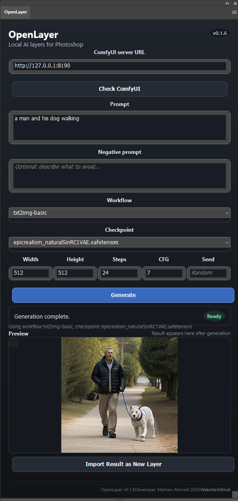
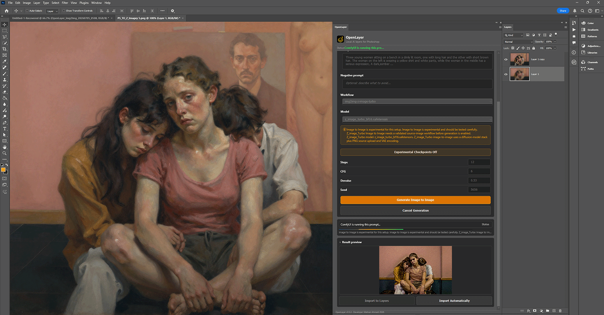

ComfyUI connection
Set a local server URL, check availability, and load available checkpoints from ComfyUI.
Local AI layers for Photoshop. Generate with your own ComfyUI server, preview inside the panel, and import the result back as an editable Photoshop layer.
Artist-first foundation
OpenLayer starts with one dependable workflow: text-to-image generation from Photoshop to ComfyUI, a panel preview, and import into the active document. The goal is a clean base that can grow into deeper layer, mask, and selection workflows without rushing fake features.
MVP features
Set a local server URL, check availability, and load available checkpoints from ComfyUI.
Send prompt, negative prompt, size, steps, CFG, seed, and checkpoint into a starter workflow.
Retrieve generated output through ComfyUI history and view endpoints, then show it in the panel.
Place the generated image into the active document and rename it with an OpenLayer timestamp.
Built with vanilla TypeScript and static UI code that avoids browser APIs missing in Photoshop UXP.
ComfyUI, Photoshop, UI, workflow, and utility modules are separated for careful next steps.
Current build


Workflow
Setup
npm install
npm run buildSelect the generated dist/manifest.json, click Load, then open the OpenLayer panel in Photoshop.
python main.py --listen 127.0.0.1 --port 8190Click Check ComfyUI, choose a checkpoint, generate, preview, and import the result into the active document.
OpenLayer defaults to http://127.0.0.1:8190 so it can run beside other local tools that may already use port 8188.
Known limitations
txt2img-basic workflow is supported right now.Roadmap
Stable text-to-image, preview, import, checkpoint selection, and setup docs.
Better workflow presets, saved settings, progress details, cleaner UI states, and packaged releases.
Image-to-image, inpainting, layer export, selection masks, upscaling, and guided generation workflows.
OpenLayer is early, practical, and open for contributors who care about artists, local workflows, and clean Photoshop integration.
Explore the repository